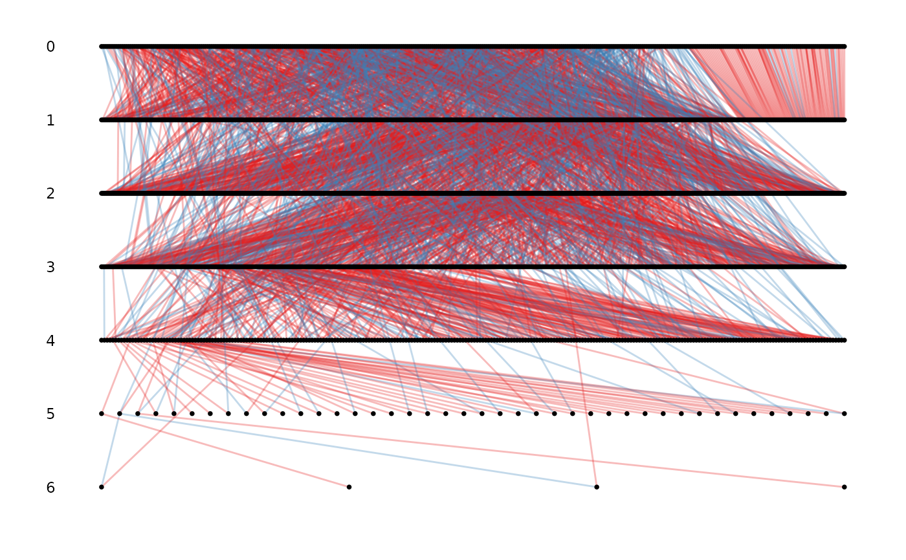

ggpedigree: Pedigree plotting tool for complex pedigrees.
Usage
ggpedigree(
.data,
ids,
mothers,
fathers,
cohort,
sex,
sex_code = NULL,
id_labels = FALSE,
remove_singletons = TRUE,
plot_unknown_cohort = FALSE,
spread_x_coordinates = TRUE,
print_cohort_labels = TRUE,
return_plot_tables = FALSE,
line_col_mother = "#E41A1C",
line_col_father = "#377EB8",
line_alpha = 0.3,
point_size = 1,
point_colour = "black",
point_alpha = 1
)Arguments
- .data
an optional data frame object with all the pedigree information
- ids
a column of .data or a vector of individual identifiers
- mothers
A column of .data or a vector of mothers corresponding to ids. Missing values are 0 or NA.
- fathers
A column of .data or a vector of fathers corresponding to ids. Missing values are 0 or NA.
- cohort
integer. Default NULL. A column of .data or an optional vector assigning a cohort to each id. If NULL, then
kinship2::kindepthis used to assign cohorts to ids.- sex
integer or character. Default NULL. An optional column of .data or a vector assigning a sex to each id. When using this option,
sex_codemust be specified. Any values not matching values insex_codewill be treated as unknown sex.- sex_code
Default NULL. A vector of length 2, indicating the value used in
sexfor females and males respectively. Females are plotted as circles, males as squares, and unknown values as triangles.- id_labels
logical. Default FALSE. Print the ids on the pedigree plot.
- remove_singletons
logical. Default TRUE. Remove ids with no relatives i.e., no offspring or parents assigned.
- plot_unknown_cohort
logical. Default FALSE. Plots ids of unknown cohorts. These are plotted in an "Unknown" cohort at the top of the pedigree. Be aware that any mothers and fathers of these individuals will be plotted below them.
- spread_x_coordinates
logical. Default TRUE. Evenly spreads the x-axis (horizontal) distribution of points within each cohort. If FALSE, this will plot the direct outcome of
igraph::layout_with_sugiyama; the FALSE option is only recommended for small pedigrees and/or less connected pedigrees.- print_cohort_labels
logical. Default TRUE. Prints cohort levels on the left hand side of plot.
- return_plot_tables
logical. Default FALSE. Returns an object with the line and point data used for the plot, but the plot will not be generated
- line_col_mother
Default = "#E41A1C". Line colour for maternal links.
- line_col_father
Default = "#377EB8". Line colour for paternal links.
- line_alpha
Default = 0.3. Line alpha (transparency) value for maternal and paternal links.
- point_size
Default = 1. Point size for ids.
- point_colour
Default = "black". Point colour for ids.
- point_alpha
Default = 1. Point alpha for ids.
Examples
data(gryphons)
pedigree <- fix_ped(gryphons[, 1:3])
## draw the gryphon pedigree by pedigree depth
ggpedigree(pedigree)
#> Warning: the first 3 columns were used for id, dam and sire identity, please specify if not correct or to remove the warning

if (FALSE) { # \dontrun{
# specifying the column names for id, mother and father
ggpedigree(pedigree, id, dam, sire)
# with cohort and sex
ggpedigree(gryphons, cohort = cohort, sex = sex, sex_code = c(1, 0))
} # }